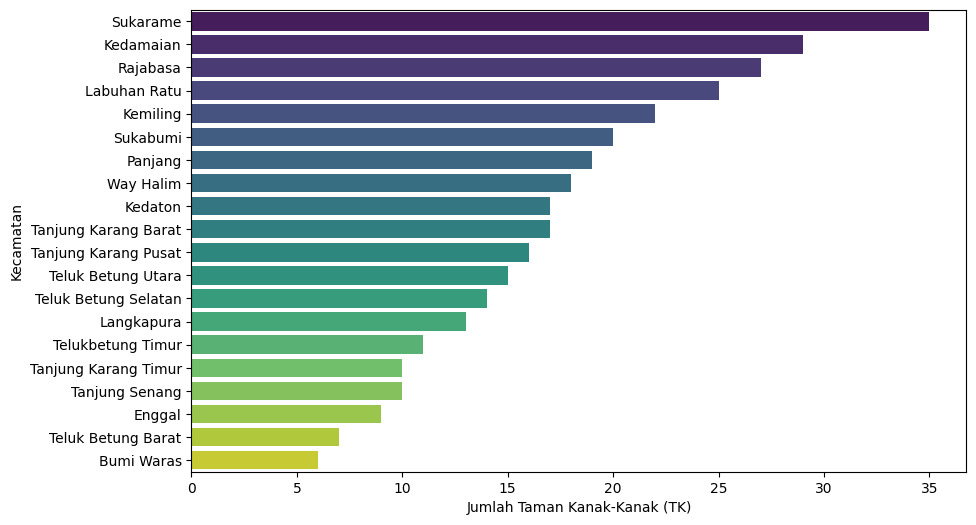
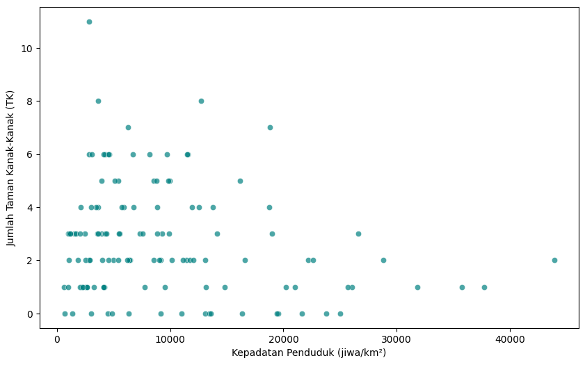
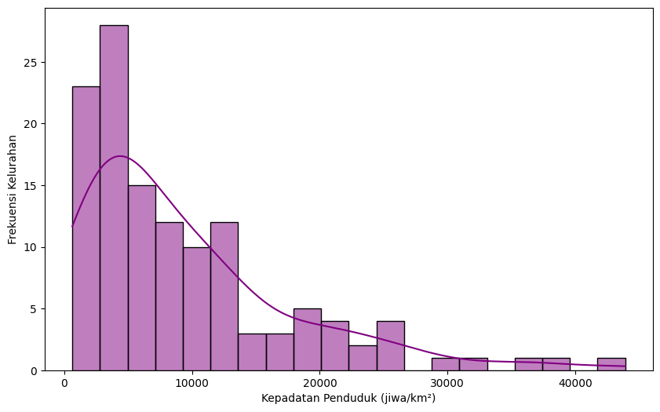
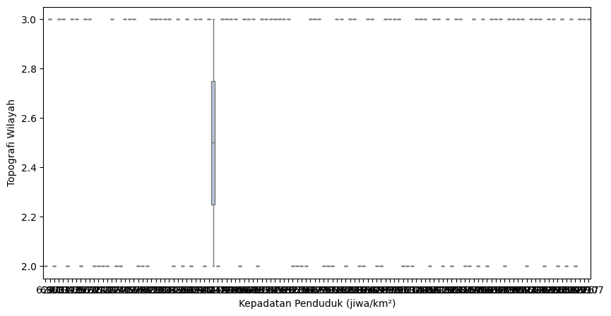
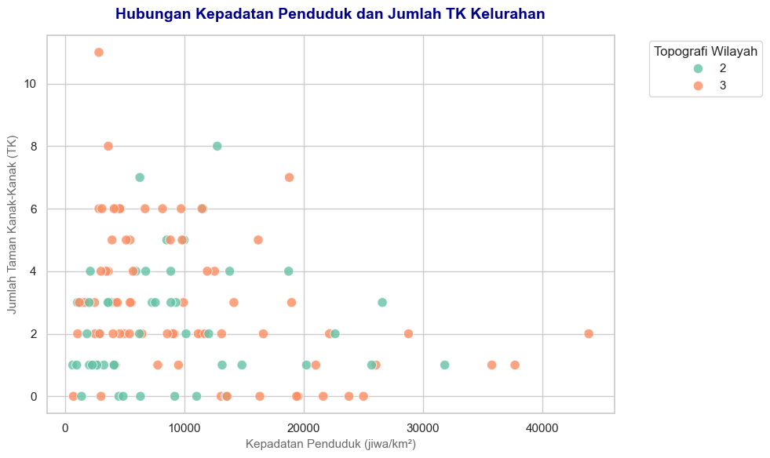

flowchart LR
A["Tujuan Visualisasi"] --> B{"Pilih Berdasarkan Kebutuhan"}
B --> C["Perbandingan"] --> C1["Diagram Batang (Item)<br>Grafik Garis (Waktu)"]
B --> D["Komposisi"] --> D1["Pie Chart (Sederhana)<br>Stacked Bar (Kompleks)"]
B --> E["Distribusi"] --> E1["Histogram (Frekuensi)<br>Box Plot (Statistik)"]
B --> F["Hubungan"] --> F1["Scatter Plot (2 Variabel)"]
5 Visualisasi Data dengan Matplotlib dan Seaborn
PentingSub-CPMK Pertemuan Ini
Mahasiswa mampu merumuskan visualisasi data perkotaan yang informatif menggunakan Matplotlib dan Seaborn, memilih jenis grafik yang tepat sesuai karakteristik data, menerapkan estetika grafik, dan menyusun interpretasi naratif atas visualisasi tersebut.
5.1 Pendahuluan
<masukkan narasi yang menceritakan ‘big why’ mempelajari visualisasi data dengan Matplotlib dan Seaborn di sini>
5.2 Gambaran Umum Kasus
Sebagai peserta studio perencanaan wilayah dan kota, Anda tentu akrab dengan laporan kompilasi data. Angka-angka di tabel profil kelurahan Bandar Lampung yang kita olah sebelumnya sangat sulit dibaca secara langsung oleh pengambil keputusan jika hanya disajikan dalam bentuk tabel baris-kolom yang kaku. Di sinilah visualisasi data berperan penting. Grafik yang dirancang dengan baik tidak hanya mempercepat pemahaman, tetapi juga meminimalisir kesalahan interpretasi kebijakan pembangunan kota.
Bayangkan visualisasi data sebagai proses menggambar grafik presentasi untuk sidang studio perencanaan. Jika grafik kita tidak memiliki judul yang jelas, label sumbunya terpotong, warnanya saling bertabrakan, atau legendanya hilang, asisten studio atau dosen pembimbing pasti akan langsung memberikan coretan revisi berwarna merah pada kertas gambar kita. Di modul ini, kita akan mempelajari prinsip dasar visualisasi yang baik dan mempraktikkannya untuk memvisualisasikan profil fasilitas pendidikan dan kepadatan penduduk Kota Bandar Lampung menggunakan pustaka Matplotlib dan Seaborn.
5.3 Instruksi
Buat notebook baru modul/modul-05.ipynb di direktori proyek Anda, sambungkan ke kernel analitika-perkotaan, dan kerjakan seluruh instruksi di dalamnya.
5.3.1 Prinsip Visualisasi: Memilih Grafik Sesuai Pertanyaan Perencanaan
Sebelum mulai memprogram, pahami terlebih dahulu kerangka pikir visualisasi data yang dirancang untuk kebutuhan analisis dan presentasi laporan studio:
- Tiga Prinsip Schwabish:
- Tunjukkan Data: Pastikan perhatian pembaca tertuju langsung pada informasi utama grafik.
- Kurangi Kekacauan (Reduce Clutter): Bersihkan elemen dekoratif non-data yang mengganggu kognisi (seperti efek 3D, bayangan, atau garis kisi-kisi latar belakang yang terlalu tebal).
- Integrasikan Teks: Tempatkan label atau legenda sedekat mungkin dengan data untuk mengurangi beban kognitif pembaca.
- Taksonomi Data:
- Kuantitatif (Numerik): Data yang dapat dihitung atau diukur (misalnya kepadatan penduduk atau jumlah sekolah). Data ini bisa berupa diskrit (bulat, seperti jumlah sekolah) atau kontinu (desimal, seperti luas wilayah).
- Kategorikal (Kualitatif): Data pengelompokkan (seperti nama kecamatan atau jenis topografi). Data ini bisa berupa nominal (tanpa urutan, seperti jenis lapangan usaha) atau ordinal (memiliki tingkatan/urutan, seperti tingkat kepuasan layanan).
- Analisis “So What?”: Jangan pernah menggunakan grafik garis (line chart) bersambung untuk data yang bersifat diskrit antarkategori (misalnya jumlah sekolah per kelurahan). Garis yang terhubung secara implisit menunjukkan adanya nilai antara di sepanjang garis tersebut, padahal di lapangan tidak ada nilai transisi antar-kelurahan. Ini adalah kesalahan visualisasi yang fatal.
- Pohon Keputusan Pemilihan Grafik: Berikut adalah panduan sederhana memilih grafik yang sesuai dengan tujuan analisis Anda:
Catatan: Diagram di atas membantu kita mencocokkan pertanyaan perencanaan dengan jenis visual yang tepat secara instan.
5.3.2 Persiapan Data dan Impor Pustaka
Seperti pada modul-modul sebelumnya, kita akan menggunakan basis data relasional SQLite bdl.sqlite yang berada di folder dataset sebagai sumber data utama. Impor pustaka yang diperlukan (sqlite3, pandas, matplotlib.pyplot, dan seaborn), buka koneksi basis data, lalu muat data gabungan kelurahan dan kecamatan menggunakan LEFT JOIN ke dalam DataFrame Pandas:
import sqlite3
import pandas as pd
import matplotlib.pyplot as plt
import seaborn as sns
# Buka koneksi basis data
path_db = "../dataset-ganjil-2026-2027/bdl.sqlite"
koneksi = sqlite3.connect(path_db)
# Ambil seluruh data kelurahan beserta nama kecamatan induknya
kueri = """
SELECT
kel.*,
kec.nama_kec
FROM
kelurahan kel
LEFT JOIN
kecamatan kec ON kel.kode_kec = kec.kode_kec
"""
df = pd.read_sql(kueri, koneksi)
print(df.shape)(126, 34)5.3.3 Diagram Batang: Membandingkan Fasilitas Antar-Kecamatan
Pertanyaan pertama kita: Kecamatan mana yang memiliki jumlah fasilitas taman kanak-kanak (TK) terbanyak?
Untuk menjawab perbandingan kuantitas antar-item kategorikal (nama kecamatan), grafik batang adalah pilihan paling tepat. Kita perlu menghitung total TK (jml_tk_negeri + jml_tk_swasta) untuk setiap kelurahan terlebih dahulu, lalu mengelompokkannya (group by) berdasarkan nama kecamatan, dan mengurutkannya dari yang terbanyak.
# Hitung total TK di setiap kelurahan
df["total_tk"] = df["jml_tk_negeri"] + df["jml_tk_swasta"]
# Agregasikan total TK per kecamatan
tk_per_kec = df.groupby("nama_kec")["total_tk"].sum().reset_index()
tk_per_kec = tk_per_kec.sort_values(by="total_tk", ascending=False)
# Mulai membuat plot
plt.figure(figsize=(10, 6))
sns.barplot(
data=tk_per_kec,
x="total_tk",
y="nama_kec",
hue="nama_kec",
palette="viridis",
legend=False
)
plt.xlabel("Jumlah Taman Kanak-Kanak (TK)")
plt.ylabel("Kecamatan")
plt.show()
PerhatianPenting!
Etika dan Batas Sumbu Y pada Grafik Batang
Grafik batang menggunakan panjang visual untuk membandingkan kuantitas. Karena itu, sumbu kuantitas (dalam diagram batang horizontal di atas adalah sumbu X, sedangkan pada diagram batang vertikal adalah sumbu Y) wajib dimulai dari nol. Jika Anda memotong sumbu kuantitas di atas nol, perbedaan tinggi batang akan terlihat jauh lebih dramatis daripada aslinya, sehingga membohongi pembaca secara visual. Hal ini dikategorikan sebagai distorsi data yang tidak etis.
Namun, untuk keperluan pembuktian teknis tertentu di mana Anda ingin mengatur batas sumbu secara manual (misalnya ingin menyoroti perbedaan yang sangat tipis pada grafik lain, atau memotong nilai dasar secara sengaja), Anda bisa menggunakan perintah limit pada sumbu: - Jika diagram batang vertikal atau sumbu Y: plt.ylim(bottom=nilai_minimum) atau ax.set_ylim(bottom=nilai_minimum). - Jika diagram batang horizontal atau sumbu X: plt.xlim(left=nilai_minimum) atau ax.set_xlim(left=nilai_minimum).
Terapkan teknik ini dengan sangat hati-hati, sertakan label nilai angka yang jelas di atas batang, dan beri catatan penjelas pada grafik Anda agar tidak menimbulkan salah tafsir.
5.3.4 Scatter Plot: Menelusuri Hubungan Kepadatan dan Fasilitas
Pertanyaan kedua kita: Apakah kelurahan yang semakin padat penduduknya memiliki jumlah fasilitas TK yang lebih banyak?
Ini adalah pertanyaan hubungan (relationship) antara dua variabel numerik (kepadatan_pddk dan total_tk). Sesuai pohon keputusan, grafik sebar (scatter plot) adalah pilihan ideal untuk melihat sebaran titik amatan ini.
plt.figure(figsize=(10, 6))
sns.scatterplot(data=df, x="kepadatan_pddk", y="total_tk", alpha=0.7, color="teal")
plt.xlabel("Kepadatan Penduduk (jiwa/km²)")
plt.ylabel("Jumlah Taman Kanak-Kanak (TK)")
plt.show()
KiatPengetahuan VS Code
Fitur Interactive Plot Viewer
Ketika Anda menggunakan Visual Studio Code untuk menjalankan Jupyter Notebook, arahkan kursor mouse ke bagian grafik yang baru saja ter-render. Di sudut kanan atas gambar, VS Code secara otomatis menyediakan tombol ikon untuk mengaktifkan Plot Viewer. Dengan alat ini, Anda bisa memperbesar (zoom), menggeser area (pan), atau menyimpan file gambar secara langsung tanpa perlu mengetik kode tambahan di editor Anda.
5.3.5 Histogram, Density Plot, dan Box Plot: Membaca Distribusi Kepadatan Penduduk Kota
Pertanyaan ketiga kita: Bagaimana sebaran kepadatan penduduk antarkelurahan di Bandar Lampung? Apakah mayoritas kelurahan memiliki kepadatan penduduk yang seragam, atau ada ketimpangan sebaran?
Ini adalah pertanyaan seputar distribusi (distribution). Kita akan memadukan histogram (mengelompokkan nilai ke dalam tabung/bin) dengan kurva estimasi kepadatan kernel (Kernel Density Estimate atau KDE) untuk memvisualisasikan bentuk sebarannya:
plt.figure(figsize=(10, 6))
sns.histplot(df["kepadatan_pddk"], kde=True, bins=20, color="purple")
plt.xlabel("Kepadatan Penduduk (jiwa/km²)")
plt.ylabel("Frekuensi Kelurahan")
plt.show()
Selain histogram, pohon keputusan kita juga menyebut box plot sebagai grafik distribusi. Jika histogram menunjukkan bentuk sebaran, box plot meringkas sebaran itu menjadi lima angka statistik: nilai minimum, kuartil pertama, median, kuartil ketiga, dan nilai maksimum — sementara titik-titik di luar “pagar” adalah outlier yang sudah kita kenali di Modul 4. Keunggulan utamanya: box plot mudah dijajarkan antarkelompok kategorikal. Mari bandingkan sebaran kepadatan penduduk antarjenis topografi wilayah:
plt.figure(figsize=(10, 5))
sns.boxplot(data=df, x="kepadatan_pddk", y="topo", color="lightsteelblue")
plt.xlabel("Kepadatan Penduduk (jiwa/km²)")
plt.ylabel("Topografi Wilayah")
plt.show()
5.3.6 Estetika Visual: Menambahkan Judul, Label, Legenda, dan Warna Harmonis
Grafik-grafik di atas secara teknis sudah benar, tetapi tampilannya masih sangat dasar. Untuk presentasi studio yang bernilai profesional, kita wajib menerapkan estetika visual: menambahkan judul yang deskriptif, memperjelas label sumbu, merapikan legenda, dan memoles tampilannya.
Kita akan menyusun opsi pengaturan font dan warna di dalam variabel dictionary, lalu membongkarnya (unpacking) ke dalam perintah visualisasi untuk menjaga efisiensi penulisan kode:
# Mengatur gaya estetika Seaborn
sns.set_theme(style="whitegrid")
# Membuat dictionary berisi opsi teks judul agar seragam dan rapi
opsi_judul = {
"fontsize": 14,
"fontweight": "bold",
"color": "darkblue",
"pad": 15
}
opsi_label = {
"fontsize": 11,
"color": "dimgray"
}
# Memulai penggambaran grafik yang sudah dipoles
plt.figure(figsize=(10, 6))
sns.scatterplot(
data=df,
x="kepadatan_pddk",
y="total_tk",
hue="topo",
palette="Set2",
alpha=0.8,
s=80
)
# Menerapkan dictionary opsi label ke elemen teks
plt.title("Hubungan Kepadatan Penduduk dan Jumlah TK Kelurahan", **opsi_judul)
plt.xlabel("Kepadatan Penduduk (jiwa/km²)", **opsi_label)
plt.ylabel("Jumlah Taman Kanak-Kanak (TK)", **opsi_label)
plt.legend(title="Topografi Wilayah", bbox_to_anchor=(1.05, 1), loc='upper left')
plt.tight_layout()
plt.show()
CatatanKonsep Python
Dictionary dan Dictionary Unpacking (**)
Dictionary adalah tipe data koleksi pada Python yang menyimpan pasangan kunci (key) dan nilai (value). Berbeda dengan list yang diakses menggunakan indeks angka (0, 1, …), kamus ini diakses menggunakan kunci bertipe string atau tipe data tak-berubah lainnya.
Contoh pendefinisian kamus:
opsi_judul = {"fontsize": 14, "color": "darkblue"}Untuk menggunakan nilai di dalamnya, kita bisa memanggil kuncinya: opsi_judul["color"].
Dictionary Unpacking (**) adalah operator pembongkaran. Ketika kita memanggil fungsi dan meletakkan tanda bintang ganda (**) sebelum nama variabel dictionary, Python akan secara otomatis membongkar seluruh pasangan kunci-nilai tersebut dan meneruskannya sebagai argumen kata kunci (keyword arguments) ke dalam fungsi tersebut.
Jadi, penulisan:
plt.title("Judul", **opsi_judul)Secara instan diterjemahkan oleh interpreter Python menjadi:
plt.title("Judul", fontsize=14, color="darkblue")Teknik ini sangat berguna untuk membuat templat gaya teks yang bersih, konsisten, dan mudah diperbarui di satu baris tunggal, sehingga Anda tidak perlu mengetik argumen dekoratif berulang-ulang di setiap grafik.
CatatanPengetahuan Komputer
Konsep DPI (Dots Per Inch) untuk Ekspor Grafik
Saat Anda menyusun laporan studio perencanaan, gambar visualisasi tidak cukup hanya tampil di layar komputer. Grafik tersebut harus diekspor sebagai file gambar statis untuk dimasukkan ke laporan akhir (Word/PDF) atau poster presentasi.
Gunakan fungsi plt.savefig() untuk menyimpan grafik. Secara default, resolusi ekspor berkisar pada 72-96 DPI (Dots Per Inch), yang akan terlihat buram atau pecah ketika dicetak di atas kertas fisik. Untuk publikasi cetak yang tajam, biasakan mengekspor dengan resolusi minimal 300 DPI:
# Menyimpan file grafik dengan ketajaman tinggi untuk cetakan
plt.savefig("hubungan_kepadatan_tk.png", dpi=300, bbox_inches="tight")Argumen bbox_inches="tight" memastikan agar tidak ada teks label atau legenda di pinggir grafik yang terpotong saat file gambar disimpan.
5.4 Latihan Mandiri
Kerjakan latihan ini di berkas notebook baru bernama modul/latihan-05.ipynb menggunakan kernel analitika-perkotaan. Pastikan alur kode Anda rapi dan terstruktur, serta jalankan perintah Restart kernel & Run All untuk memverifikasi bahwa kode Anda bebas dari galat.
Latihan ini menggunakan dataset kelurahan yang sama, namun dengan fokus analisis fasilitas pendidikan dasar (SD dan SMP) serta struktur lapangan usaha warga:
Persiapan Data: Hubungkan notebook ke basis data
bdl.sqlitedan tarik seluruh data kelurahan beserta kecamatan induknya ke DataFrame menggunakan Pandas.Variabel Baru: Buat dua kolom baru untuk menghitung total fasilitas pendidikan dasar:
total_sd=jml_sd_negeri+jml_sd_swastatotal_smp=jml_smp_negeri+jml_smp_swasta
Diagram Batang Data Kategorikal: Hitung frekuensi tiap kategori lapangan usaha utama warga (
lap_usaha_sebagian_warga) menggunakanvalue_counts()yang sudah Anda kenal di Modul 4, lalu sajikan hasilnya sebagai diagram batang. Urutkan batang dari kategori dengan frekuensi tertinggi.Scatter Plot: Buat sebuah grafik sebar (scatter plot) untuk melihat hubungan antara jumlah SD (
total_sd, sumbu X) dengan jumlah SMP (total_smp, sumbu Y) per kelurahan.Box Plot Distribusi: Visualisasikan distribusi
total_sdantar-kelurahan pada setiap kecamatan menggunakan box plot (sns.boxplotdengan sumbu Y berisinama_kec). Amati kecamatan mana yang sebarannya paling lebar dan mana yang memiliki outlier.Estetika Diagram: Poles diagram batang pada langkah 3 menggunakan opsi parameter kamus/dictionary: terapkan judul yang informatif, label sumbu yang bersih, warna palet yang harmonis, dan simpan grafik tersebut menggunakan
plt.savefig()dengan resolusi 300 DPI.Interpretasi & Tutup: Tuliskan satu paragraf interpretasi singkat (storytelling) mengenai kesimpulan visualisasi Anda terhadap ketersediaan fasilitas SD dan SMP serta struktur lapangan usaha warga, lalu tutup koneksi basis data Anda.